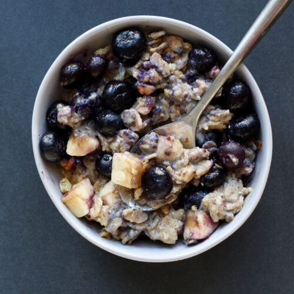

Berry Banana Oatmeal

Image courtesy of nutritionfacts.org
MAKES: 1 servings DIFFICULTY: Easy
Here's a quick and easy, Berry Banana Oatmeal Bowl. A delicious way to start the day! Consistent with recommendations from leading cancer and heart disease authorities, my Daily Dozen recommends at least three daily servings of whole grains, such as oats.
Ingredients
Salsa
- 1 cup unsweetened soymilk
- ⅓ cup old fashioned rolled oats
- 1 tablespoon ground flaxseed
- ½ teaspoon cinnamon
- 1 banana, sliced
- ½-1 cup berries (fresh or frozen)
- 1-2 tablespoons crushed walnuts, optional
Instructions
- Add the salsa ingredients to a food processor. Pulse until reaches desired texture and consistency. Pour the salsa into a glass jar and store in the refrigerator until ready to serve.
- Combine the hummus ingredients in a food processor. Blend until smooth. Add 1-2 tablespoons of water, if needed, to help blend. Transfer the hummus to a glass container and store in the refrigerator until ready to serve.
- Divide the cooked beans, corn, whole grains, and broccoli among 4 bowls. Serve on top of greens and top with the homemade hummus and salsa.